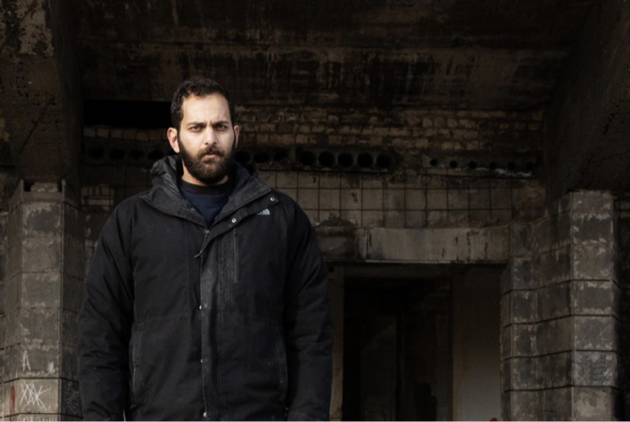

Buildings are often the mute bystanders to the social, economic, and
political events taking place around them. The Industrial
Pedagogical Technicum in the Georgian capital of Tbilisi is a
perfect example.
Over the past
four decades the building has served as an architectural monument, a
place of higher learning and a makeshift home for an estimated 65
families who were displaced from Abkhazia during the 1991-1992
fighting and the Tskhinvali region during the 2008 Russo-Georgian
War.
The building, located at 4
Marshal Gelovani Avenue, was designed by Georgian architect Nikoloz
Lasareishvili and completed in 1978. The style of the building is
rooted in Constructivism and Latin American Modernism.
“Nikoloz Lasariashvili selected a color palette that would blend in
seamlessly with the terrain surrounding the Technical School,” noted
architect Levan Kalandarishvili, an architect and lecturer at the
Free University’s Visual Arts, Architecture & Design School.
“Architects at the time were unable to develop anything unique
outside standard typology, yet with excellent proportions and
symmetry, this structure stands out. The windows also accurately
depict the architecture of the time; nothing is overstated.”
Initially, the Industrial Pedagogical Technicum was divided into
five major sections: the main block, which included classrooms and
administrative offices; an auditorium attached to the main block; a
workshop and recreational facility which included a gymnasium; a
bridge connecting the main block to the facilities; and a
sixteen-story dormitory building behind the Industrial Technicum.
Natalia Odikadze
Thomas Ibrahim
Demo Kitsmarishvili
The Technicum, located on a hillside on the border of the Saburtalo
and Dighomi districts, is somehow isolated from the rest of the
city. For years, the only element visible through the dense
vegetation was a sculpture by Zurab Tsererteli that adorned the
auditorium facade until 2018.
During the Soviet Union, the building was home to a school that
prepared students to become teachers at vocational schools across
the former Soviet world in industrial and civil engineering,
agriculture technology, metalworking and installing and maintaining
industrial equipment. Five-hundred and seventy people graduated from
the Technicum, according to “Party Life of the
Industrial-Pedagogical Technical School,” an article published in
Tbilisi magazine in 1978.

The main feature of the sculpture was a male figure with golden
bat-like wings looking out toward the passing traffic.
The bas relief's bat-like wings were known locally as "Tbilisi
Batman," even though most of the passersby were unaware of the
extent of the space behind.
Today, the Industrial Pedagogical Technicum serves several
functions and the people using it do not communicate with each
other, creating a chaotic situation inside and out.
The families living there, known as IDPs, are forced to live in
perpetual uncertainty. The government allows them to live in the
building, but it is not their property. Multiple efforts to
privatize the building have added to their sense that this is a
temporary residence, albeit one they have been stuck in for 30
years. The building’s de facto tenants struggle to rebuild, change,
or improve their living conditions, due to the specificity of the
space as well as their lack of ownership and influence over the
building’s future and resources. The building is currently on the
property of the Ministry of Economy and Sustainable Development’s
Legal Entity of Public Law (LEPL). It houses Icarus College,
Abkhazia School #2 and a kindergarten.
It is obvious from the facade of the building that it serves many
functions. In the section dedicated to Icarus College, the windows
boast modern, insulated plastic frames. The IDP settlement, on the
other hand, has original aluminum rotating windows in the front and
the old wooden windows in the back. IDPs also created new, informal
entrances to the building.
Thomas Ibrahim
Researcher and architect Thomas Ibrahim became interested in the Industrial Pedagogical Technicum in 2016, when he wanted to learn more about its structure and unique characteristics as an example of social modernism architecture. The building was in considerably better shape at that time, and Zurab Tsereteli's relief sculpture was still affixed to its facade.

The Technicum sculpture was stolen between February 2018 and
February 2019.
Photos and sketch by Thomas Ibrahim, 2017-2018.
As Ibrahim recalls, the relief began to vanish from the facade in early 2018. Its disappearance led to wider interest in how the lives of the displaced intersected with the building itself, as well as efforts to restore it. During the Tbilisi Architecture Biennial, an installation was made of wire to highlight the missing pieces of the sculpture.

In December of the same year, he launched the Agora
Exhibition at Industrial Technicum. The exhibit was part of
INHABIT! Tbilisi, post-Soviet, a project that reexamined and
explored repurposing former public structures for
contemporary use. The Agora Exhibition was the first step in
making the space more public and active.
The manually built stairway made the terrace and auditorium
publicly accessible and served as an exhibition space, a
playground for the children living in the IDP communities,
and a workshop area. It even resulted in some graffiti on
the walls, indicating that someone had been there recently,
rather than decades before. According to the project, in an
ideal scenario, this public area would serve the IDP
community living in the building and would host activities
that would help them further integrate into city life.
“I was initially fascinated by the sculpture by Zurab
Tsereteli that was affixed to the auditorium facade of the
building. The fact that the relief was stolen catalyzed the
process and made me return and investigate. I was also
working on a Biennale at that time. Then I became more
familiar with the people who live there. I was thinking that
it would be valuable to make a public space specially for
IDPs living there, so that they could communicate more and
be more involved in city life.”
Image Credits: Angus Leadly Brown
“The project was well received at the time by the residents who lived there; we held workshops and the Agora Exhibition there. We first built the staircase to have access to the terrace because I thought it brought the most value for anyone living there. Before you had to climb up beside the building to reach it. We simply cleaned the space; in fact, the municipality came to clean the space. I think that’s what the space needed for that moment. Of course, we wanted to do more there to develop it further.”

“People would go up there because they were curious to see
the terrace and the view from there. Then we held the
workshop there; we had some wood left over from the
workshop, so we made the furniture workshop, and we invited
some students who were also working on the Architecture
Biennial. We started building furniture there with some of
the residents. We began to construct some things, including
a 7-meter-long gigantic swing. We started making a terrace a
little bit like a playground.”
“When the residents knew that I had built the staircase with
the purpose of creating a public space for them as well,
they became more involved and interested as they had a
little more hope that something would happen to transform
the space.”